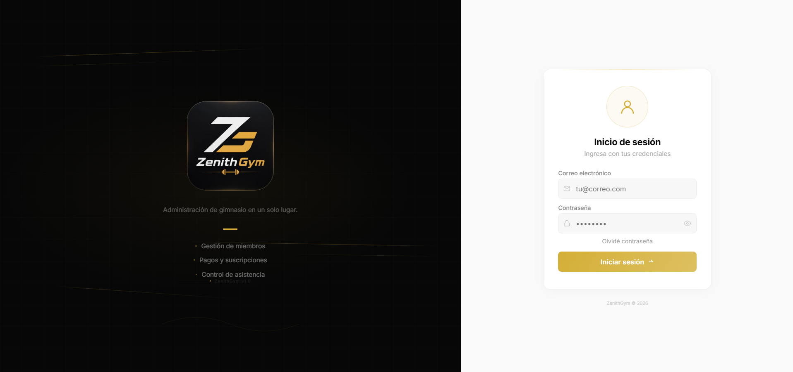
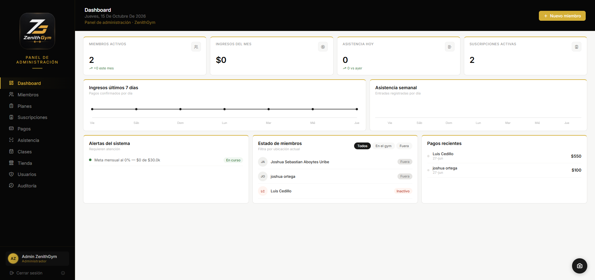
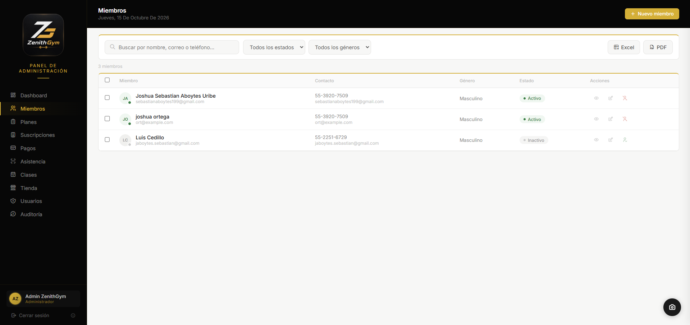
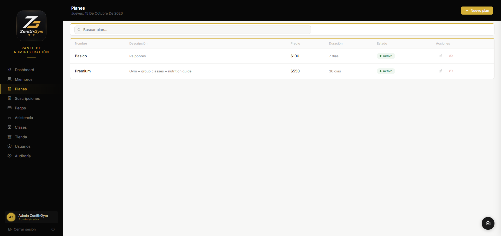
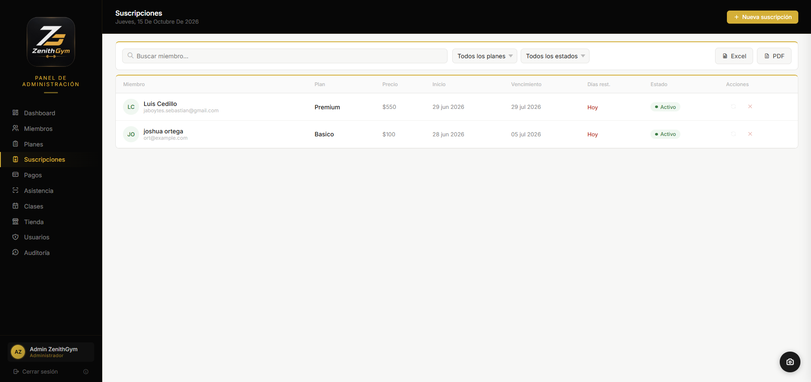
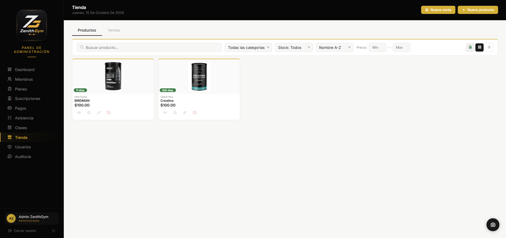
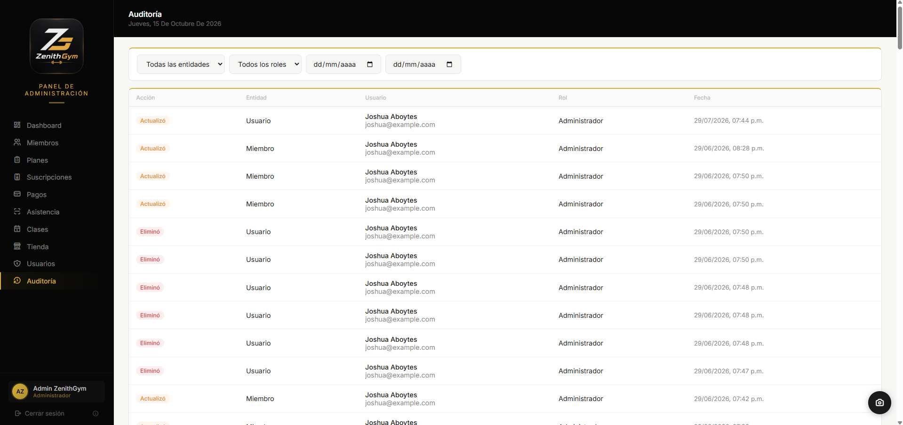

Zenith — Sistema
de Gimnasio

Inicio de sesión
Panel principal (dashboard)
Gestión de miembros Edición de miembros
Edición de miembros

Planes y membresías
Suscripciones
Tienda de productos Control de asistencia con escaneo QR
Control de asistencia con escaneo QR

Auditoría / registro de actividad¿Qué es este proyecto?
Zenith es una aplicación web fullstack desarrollada con el stack MERN para la administración integral de un gimnasio. Centraliza en una sola plataforma la gestión de los socios, sus planes y suscripciones, la venta de productos y el control de acceso, sustituyendo los registros manuales y las hojas de cálculo por un sistema centralizado.
Función principal
Permite administrar miembros (alta, consulta y edición), definir planes y suscripciones con su vigencia, gestionar una tienda de productos y llevar el control de asistencia mediante escaneo de códigos QR. Además, el sistema genera un registro de auditoría con la actividad realizada, y todo se visualiza desde un panel principal con métricas del gimnasio.
Stack tecnológico
Lo que aprendí
Este proyecto me permitió consolidar el stack MERN completo: construir la interfaz con componentes y estado en React, diseñar una API REST con Node.js y Express, y modelar la información en MongoDB. También trabajé la autenticación de usuarios, la generación y lectura de códigos QR para el control de asistencia, y la importancia de un registro de auditoría para dar trazabilidad a las operaciones del sistema.